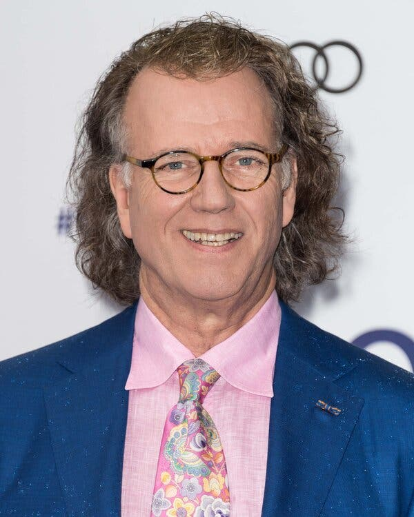
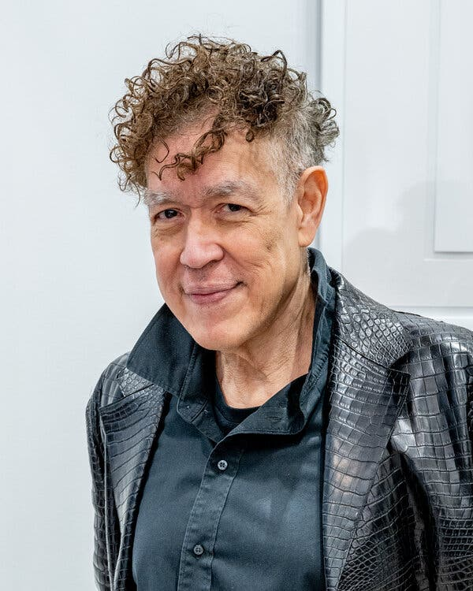

A photo released by the Vatican on Friday showed Pope Francis speaking to artists at a gathering that he hosted in the Sistine Chapel. Credit...Vatican Media, via Reuters
Pope Hosts Artists in Sistine Chapel, Even Some Who Attracted Controversy
The event was part of a broader effort to engage with artists as the Roman Catholic Church did in the past. Pope Francis also urged them to pursue social justice through their work.
Reporting from Vatican City
June 23, 2023
As Pope Francis met with dozens of international artists at the Sistine Chapel on Friday, he sought both to reaffirm the Roman Catholic Church’s commitment to artistic endeavors and to enlist the artists to act as catalysts for change in areas like social justice.
Yet as the group sat amid Renaissance frescoes by the likes of Michelangelo, Botticelli and Perugino — undisputedly one of the high points of papal art patronage — not all of those present had a traditional religious bent.
Among them were the American artist Andres Serrano, whose photograph “Piss Christ,” an image of a plastic crucifix submerged in a tank full of urine, was considered blasphemous when it debuted in 1987.
On Friday, Francis blessed Mr. Serrano and gave him a cheery thumbs up.
“I was surprised to be invited and even more surprised that he gave me a thumbs up,” Mr. Serrano said afterward. “And I was very happy that the church understands that I am a Christian artist and I am not a blasphemous artist. I’m just an artist.”
The gathering was held to mark the 50th anniversary of the opening of the Vatican Museum’s Collection of Modern and Contemporary Art. Inaugurated by Pope Paul VI in June 1973, the collection includes works by Van Gogh, Francis Bacon, Marc Chagall and Matisse, and pieces by contemporary artists like the photographers Rinko Kawauchi, Bill Armstrong and Mimmo Jodice and the new media artists’ collective Studio Azzurro.
Nine years before, Paul VI had convened artists at the Sistine Chapel to try to bridge a gap that had emerged between the church and contemporary artists, a contrast with the fruitful collaboration that had existed for centuries. The contemporary art museum was one outcome of that meeting.
For Friday’s gathering, there was no “master plan” in the choice of artists, said Bishop Paul Tighe, secretary in the Vatican’s culture and education office. They included the Brazilian musician Caetano Veloso, the British director Ken Loach and the British-Indian sculptor Anish Kapoor.
Some were known to the Vatican, and others had been recommended for the event. “And then we had some favorites we wanted there,” Bishop Tighe laughed, without specifying who that might be.

André Rieu, a Dutch violinist and conductor, said he was
moved by the pope’s message at the event.
Credit...Ian Gavan/Getty Images

Andres Serrano, an American artist known for his 1987
photograph “Piss Christ,” said he was surprised to have
been invited.Credit...Roy Rochlin/Getty Image
The inclusion of writers and artists working in nonvisual media signaled a desire to “broaden out the engagement of the church with artists,” he said, noting that in recent years the church had made incursions into events like the Venice Biennale.
“We want to move into the world of the arts, get to literary festivals, music and just engage,” Bishop Tighe said. “And to be there as part of the dialogue and presence.”
Francis told the group that “neither art nor faith can leave things simply as they are: They change, transform, move and convert them. Art can never serve as an anesthetic; it brings peace, yet far from deadening consciences, it keeps them alert.”
The artists in attendance said they were honored to have been invited, and moved by the pope’s words.
“I was touched by his words about harmony, because I am a musician and every concert we give is about harmony,” said André Rieu, a Dutch violinist and conductor, referring to some of the pope’s words, like “true beauty is a reflection of harmony.”
Francis also called on the artists to “not forget the poor.” They, too, “have need of art and beauty,” and usually “have no voice to make themselves heard” — words that resonated with the British film director Ken Loach.
“It’s very clear from what the pope says that he is demanding social justice, and harmony in the world, which those in power are destroying in the way they destroy the planet,” Mr. Loach said later. “He told us to remember the poor — I think he means with social justice, which means giving power to the poor, not just a few pence from your pocket.”
David Van Reybrouck, the Belgian cultural historian and author, gave Francis a copy of his book “Congo: The Epic History of a People.” He called the pope’s visit there in February “an extremely important event in the history of the country.” And he said he had thanked Francis for his encyclical on the environment “Laudato Si,” or “Praise Be.”
“There are few religious leaders who have been so strong and so bold and so brave when it comes to tackling climate change,” Mr. Van Reybrouck said, noting his gratitude for having been included in the gathering. “The density of artistic talent in a few square meters has rarely been so high,” he said.
Mr. Serrano said that despite the controversy that greeted some of his work, he hoped that some of his recent photographs of a Pietà, an image of the Virgin Mary contemplating the dead Christ on her lap, would be admitted into the Vatican’s collection.
Mr. Serrano also said he was sure that Francis had known exactly who he was when giving him the earlier thumbs up with a smile.
“It was a great, mischievous smile,” Mr. Serrano said.
Asked about the decision to invite artists whose work has drawn controversy, Bishop Tighe said that artists had the ability to be provocative, “to waken us up, call us to a new alertness and a new consciousness.”
“I think,” he added, “we all just have to work on the presumption of good faith of the artist who is trying to say something challenging something, and may sometimes have to resort to strong measures to waken us up.”
Elisabetta Povoledo is a reporter based in Rome and has been writing about Italy for more than three decades. @EPovoledo • Facebook
SOURCE: NEW YORK TIMES